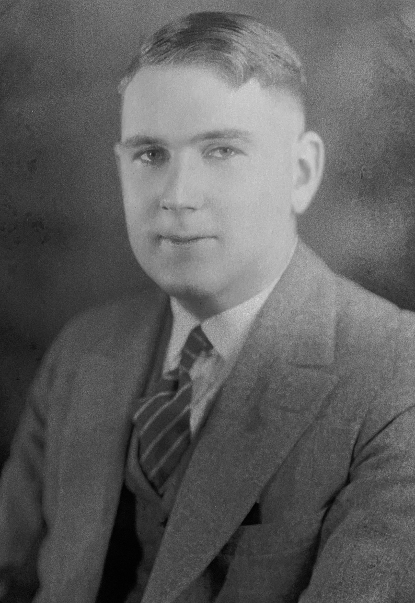

 |
Louis Lorenz Stein Louise Dorthea Stein was born in Oakland, California.* Click here to see Wikipedia media files for Louis Lorenz Stein. |
|
|
Important
Facts
|
||
| August 21, 1902 | Born in Berkeley, California. Louis was the son of Dorthea Reismann and Lorenz Louis Stein Sr.. | |
| November 5, 1927 | Louis married Mildred "Milly" Slater in Berkeley, California. | |
| August 18, 1929 | Robert Louis Stein was born in Berkeley, California. Source: California Birth Index, 1905-1995. | |
| April 14, 1933 | Janet Ruth Stein was born in Berkeley, California. Source: California Birth Index, 1905-1995. | |
| November 11, 1996 | Louis died in Berkeley, California. Source: California Death Index, 1940-1997. |

Last update: July 10, 2026